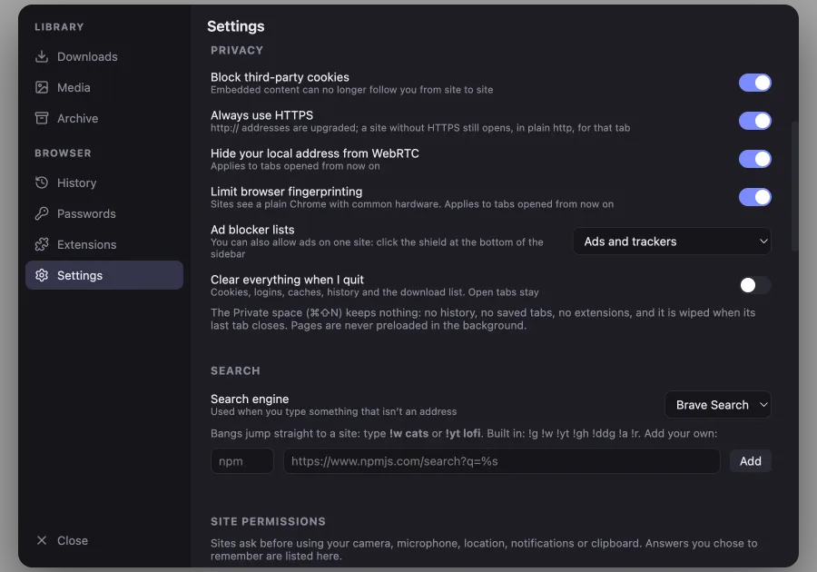
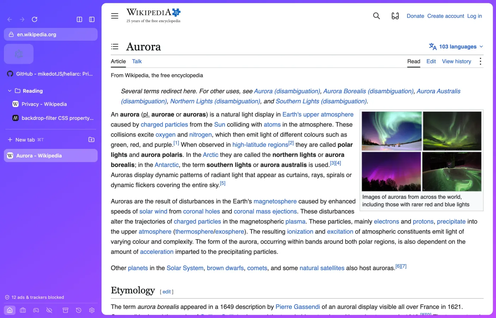
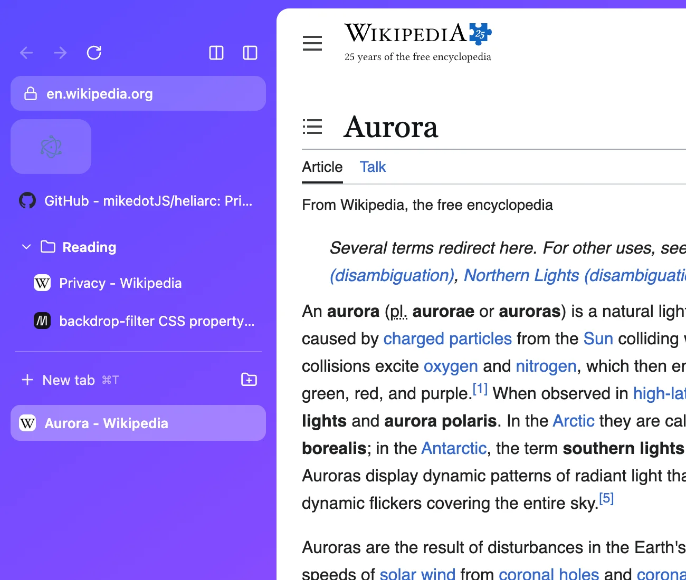
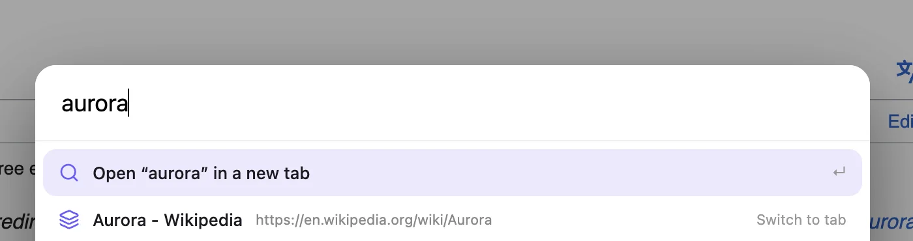

Every switch in plain sight
Cookies, HTTPS, WebRTC and fingerprinting each get one toggle.

A private browser for Mac and Windows. Blocks ads and trackers by default, runs your Chrome extensions.

Pin favorites, tuck pages into folders, split the screen in two. Spaces keep Home, Work and Fun apart, each with its own logins.

One bar for tabs, history and search. Bangs jump straight to a site, or add your own.
!w!yt!gh!g!ddg

Privacy
Cookies, HTTPS, WebRTC and fingerprinting each get one toggle.

Filter lists run on every page. Allow ads on one site with a click on the shield.
No history, no saved tabs, no extensions. Wiped when its last tab closes.
Third-party cookies blocked, HTTPS upgrades, a plain browser fingerprint.
Camera, microphone, location, notifications and clipboard need your yes. What you chose to remember is listed in Settings.
Bitwarden and Proton Pass run in the toolbar. Add anything from the Chrome Web Store with one button.
History and bookmarks come over from these browsers and Edge. Saved passwords come over from Chrome, Edge, Brave and Arc on Mac, or from a CSV exported from any browser.
Heliarc is released under the GPL-3.0 license. Latest release
Signed and notarized by Apple. Pick the build that matches your Mac.
Not signed yet. If Windows warns you, click More info, then Run anyway.
Protected video such as Netflix and Spotify does not play yet. Heliarc updates itself on Mac and tells you when a new version is out on Windows.